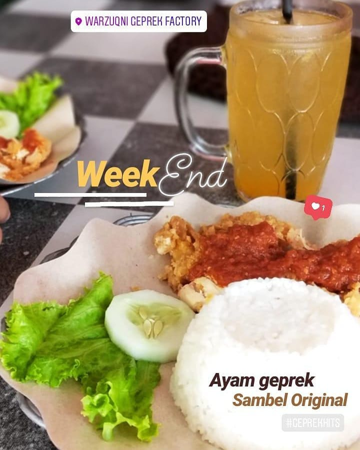
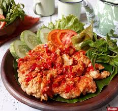
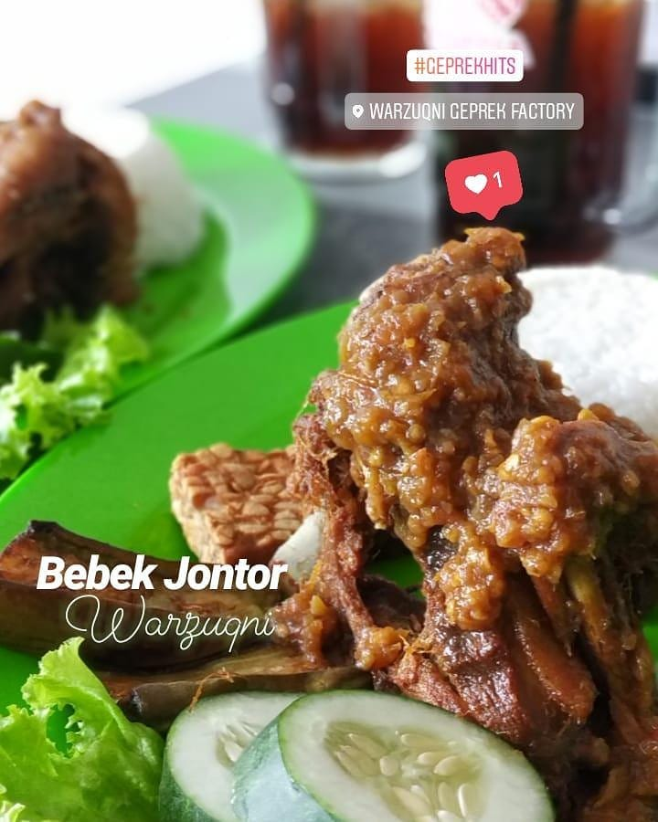

Menu Yang Tersedia

Menu Ayam Geprek
Ayam Geprek Sambel Bawang = Rp. 12.000
Ayam Geprek Original = Rp. 14.000
Ayam Geprek Sambel Bonyok = Rp. 15.000
Ayam Geprek Sambel Jontor = Rp. 16.000

Menu Ayam Biasa
Ayam Kampung Gepuk = Rp. 23.000
Lalapan Ayam Kampung = Rp. 23.000
Ayam Kampung Jontor = Rp. 25.000
Ayam Krispi = Rp. 10.000
